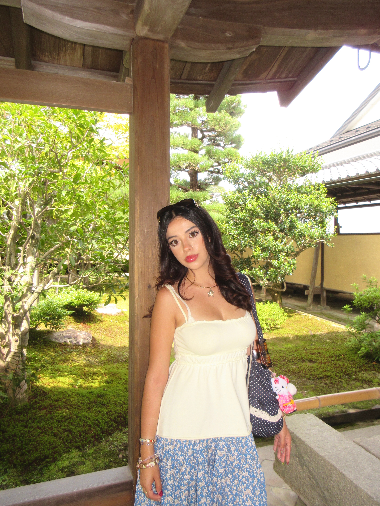

Get to a bit about me!!

My Background
Hi! If you want to know a bit more about me, you've definitely come to the right place!
I am Latina and a first generation college student, I grew up in Tijuana B.C Mexico then moved here to San Diego when I was 12! I am extremely close to my mom and dad and I also have an older brother and a pug named Luna!
My Education
I study at UCSD (University of California San Diego), and I am majoring in Computer Science, I lived on campus the first two years then have been commuting ever since! I have loved being at this school and i've gotten to learn so much. Not only through my Computer science courses but through my electives as well!
What I'm Currently Working On
I'm currently finishing off my last year here at UCSD, and taking all of my upper divison courses. I am also working part time at General Atomics, which I intered at over the summer! I am really into design and am currently working on expanding my skills into more front end work and prototyping!
My Goals for the future
In the future I hope to accomplish a career in computer science, more specifically
as a full stack or front-end developer, I'd also love to work on research and maybe
even get my masters in the future! As a personal goal I also really want to get
an opportunity to travel more.
One of my biggest dreams is to explore more countries!